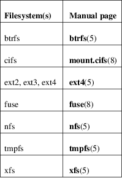

mount − mount a filesystem
mount [−h|−V]
mount [−l] [−t fstype]
mount −a [−fFnrsvw] [−t fstype] [−O optlist]
mount [−fnrsvw] [−o options] device|mountpoint
mount [−fnrsvw] [−t fstype] [−o options] device mountpoint
mount −−bind|−−rbind|−−move olddir newdir
mount −−make−[shared|slave|private|unbindable|rshared|rslave|rprivate|runbindable] mountpoint
All files accessible in a Unix system are arranged in one big tree, the file hierarchy, rooted at /. These files can be spread out over several devices. The mount command serves to attach the filesystem found on some device to the big file tree. Conversely, the umount(8) command will detach it again. The filesystem is used to control how data is stored on the device or provided in a virtual way by network or other services.
The standard form of the mount command is:
mount −t type device dir
This tells the kernel to attach the filesystem found on device (which is of type type) at the directory dir. The option −t type is optional. The mount command is usually able to detect a filesystem. The root permissions are necessary to mount a filesystem by default. See section "Non−superuser mounts" below for more details. The previous contents (if any) and owner and mode of dir become invisible, and as long as this filesystem remains mounted, the pathname dir refers to the root of the filesystem on device.
If only the directory or the device is given, for example:
mount /dir
then mount looks for a mountpoint (and if not found then for a device) in the /etc/fstab file. It’s possible to use the −−target or −−source options to avoid ambiguous interpretation of the given argument. For example:
mount −−target /mountpoint
The same filesystem may be mounted more than once, and in some cases (e.g., network filesystems) the same filesystem may be mounted on the same mountpoint multiple times. The mount command does not implement any policy to control this behavior. All behavior is controlled by the kernel and it is usually specific to the filesystem driver. The exception is −−all, in this case already mounted filesystems are ignored (see −−all below for more details).
Listing the
mounts
The listing mode is maintained for backward compatibility
only.
For more robust and customizable output use findmnt(8), especially in your scripts. Note that control characters in the mountpoint name are replaced with '?'.
The following command lists all mounted filesystems (of type type):
mount [−l] [−t type]
The option −l adds labels to this listing. See below.
Indicating
the device and filesystem
Most devices are indicated by a filename (of a block special
device), like /dev/sda1, but there are other
possibilities. For example, in the case of an NFS mount,
device may look like knuth.cwi.nl:/dir.
The device names of disk partitions are unstable; hardware reconfiguration, and adding or removing a device can cause changes in names. This is the reason why it’s strongly recommended to use filesystem or partition identifiers like UUID or LABEL. Currently supported identifiers (tags):
LABEL=label
Human readable filesystem identifier. See also −L.
UUID=uuid
Filesystem universally unique identifier. The format of the UUID is usually a series of hex digits separated by hyphens. See also −U.
Note that mount uses UUIDs as strings. The UUIDs from the command line or from fstab(5) are not converted to internal binary representation. The string representation of the UUID should be based on lower case characters.
PARTLABEL=label
Human readable partition identifier. This identifier is independent on filesystem and does not change by mkfs or mkswap operations. It’s supported for example for GUID Partition Tables (GPT).
PARTUUID=uuid
Partition universally unique identifier. This identifier is independent on filesystem and does not change by mkfs or mkswap operations. It’s supported for example for GUID Partition Tables (GPT).
ID=id
Hardware block device ID as generated by udevd. This identifier is usually based on WWN (unique storage identifier) and assigned by the hardware manufacturer. See ls /dev/disk/by−id for more details, this directory and running udevd is required. This identifier is not recommended for generic use as the identifier is not strictly defined and it depends on udev, udev rules and hardware.
The command lsblk −−fs provides an overview of filesystems, LABELs and UUIDs on available block devices. The command blkid −p <device> provides details about a filesystem on the specified device.
Don’t forget that there is no guarantee that UUIDs and labels are really unique, especially if you move, share or copy the device. Use lsblk −o +UUID,PARTUUID to verify that the UUIDs are really unique in your system.
The recommended setup is to use tags (e.g. UUID=uuid) rather than /dev/disk/by−{label,uuid,id,partuuid,partlabel} udev symlinks in the /etc/fstab file. Tags are more readable, robust and portable. The mount(8) command internally uses udev symlinks, so the use of symlinks in /etc/fstab has no advantage over tags. For more details see libblkid(3).
The proc filesystem is not associated with a special device, and when mounting it, an arbitrary keyword − for example, proc − can be used instead of a device specification. (The customary choice none is less fortunate: the error message 'none already mounted' from mount can be confusing.)
The files
/etc/fstab, /etc/mtab and /proc/mounts
The file /etc/fstab (see fstab(5)), may
contain lines describing what devices are usually mounted
where, using which options. The default location of the
fstab(5) file can be overridden with the
−−fstab path command−line
option (see below for more details).
The command
mount −a [−t type] [−O optlist]
(usually given in a bootscript) causes all filesystems mentioned in fstab (of the proper type and/or having or not having the proper options) to be mounted as indicated, except for those whose line contains the noauto keyword. Adding the −F option will make mount fork, so that the filesystems are mounted in parallel.
When mounting a filesystem mentioned in fstab or mtab, it suffices to specify on the command line only the device, or only the mount point.
The programs mount and umount(8) traditionally maintained a list of currently mounted filesystems in the file /etc/mtab. The support for regular classic /etc/mtab is completely disabled at compile time by default, because on current Linux systems it is better to make /etc/mtab a symlink to /proc/mounts instead. The regular mtab file maintained in userspace cannot reliably work with namespaces, containers and other advanced Linux features. If the regular mtab support is enabled, then it’s possible to use the file as well as the symlink.
If no arguments are given to mount, the list of mounted filesystems is printed.
If you want to override mount options from /etc/fstab, you have to use the −o option:
mount device|dir −o options
and then the mount options from the command line will be appended to the list of options from /etc/fstab. This default behaviour can be changed using the −−options−mode command−line option. The usual behavior is that the last option wins if there are conflicting ones.
The mount program does not read the /etc/fstab file if both device (or LABEL, UUID, ID, PARTUUID or PARTLABEL) and dir are specified. For example, to mount device foo at /dir:
mount /dev/foo /dir
This default behaviour can be changed by using the −−options−source−force command−line option to always read configuration from fstab. For non−root users mount always reads the fstab configuration.
Non−superuser
mounts
Normally, only the superuser can mount filesystems. However,
when fstab contains the user option on a line,
anybody can mount the corresponding filesystem.
Thus, given a line
/dev/cdrom /cd iso9660 ro,user,noauto,unhide
any user can mount the iso9660 filesystem found on an inserted CDROM using the command:
mount /cd
Note that mount is very strict about non−root users and all paths specified on command line are verified before fstab is parsed or a helper program is executed. It’s strongly recommended to use a valid mountpoint to specify filesystem, otherwise mount may fail. For example it’s a bad idea to use NFS or CIFS source on command line.
Since util−linux 2.35, mount does not exit when user permissions are inadequate according to libmount’s internal security rules. Instead, it drops suid permissions and continues as regular non−root user. This behavior supports use−cases where root permissions are not necessary (e.g., fuse filesystems, user namespaces, etc).
For more details, see fstab(5). Only the user that mounted a filesystem can unmount it again. If any user should be able to unmount it, then use users instead of user in the fstab line. The owner option is similar to the user option, with the restriction that the user must be the owner of the special file. This may be useful e.g. for /dev/fd if a login script makes the console user owner of this device. The group option is similar, with the restriction that the user must be a member of the group of the special file.
Bind mount
operation
Remount part of the file hierarchy somewhere else. The call
is:
mount −−bind olddir newdir
or by using this fstab entry:
/olddir /newdir none bind
After this call the same contents are accessible in two places.
It is important to understand that "bind" does not create any second−class or special node in the kernel VFS. The "bind" is just another operation to attach a filesystem. There is nowhere stored information that the filesystem has been attached by a "bind" operation. The olddir and newdir are independent and the olddir may be unmounted.
One can also remount a single file (on a single file). It’s also possible to use a bind mount to create a mountpoint from a regular directory, for example:
mount −−bind foo foo
The bind mount call attaches only (part of) a single filesystem, not possible submounts. The entire file hierarchy including submounts can be attached a second place by using:
mount −−rbind olddir newdir
Note that the filesystem mount options maintained by the kernel will remain the same as those on the original mount point. The userspace mount options (e.g., _netdev) will not be copied by mount and it’s necessary to explicitly specify the options on the mount command line.
Since util−linux 2.27 mount permits changing the mount options by passing the relevant options along with −−bind. For example:
mount −o bind,ro foo foo
This feature is not supported by the Linux kernel; it is implemented in userspace by an additional mount(2) remounting system call. This solution is not atomic.
The alternative (classic) way to create a read−only bind mount is to use the remount operation, for example:
mount −−bind olddir newdir
mount −o remount,bind,ro olddir newdir
Note that a read−only bind will create a read−only mountpoint (VFS entry), but the original filesystem superblock will still be writable, meaning that the olddir will be writable, but the newdir will be read−only.
It’s also possible to change nosuid, nodev, noexec, noatime, nodiratime, relatime and nosymfollow VFS entry flags via a "remount,bind" operation. The other flags (for example filesystem−specific flags) are silently ignored. The classic mount(2) system call does not allow to change mount options recursively (for example with −o rbind,ro). The recursive semantic is possible with a new mount_setattr(2) kernel system call and it’s supported since libmount from util−linux v2.39 by a new experimental "recursive" option argument (e.g. −o rbind,ro=recursive). For more details see the FILESYSTEM−INDEPENDENT MOUNT OPTIONS section.
Since util−linux 2.31, mount ignores the bind flag from /etc/fstab on a remount operation (if −o remount is specified on command line). This is necessary to fully control mount options on remount by command line. In previous versions the bind flag has been always applied and it was impossible to re−define mount options without interaction with the bind semantic. This mount behavior does not affect situations when "remount,bind" is specified in the /etc/fstab file.
The move
operation
Move a mounted tree to another place (atomically).
The call is:
mount −−move olddir newdir
This will cause the contents which previously appeared under olddir to now be accessible under newdir. The physical location of the files is not changed. Note that olddir has to be a mountpoint.
Note also that moving a mount residing under a shared mount is invalid and unsupported. Use findmnt −o TARGET,PROPAGATION to see the current propagation flags.
Shared
subtree operations
Since Linux 2.6.15 it is possible to mark a mount and its
submounts as shared, private, slave or unbindable. A shared
mount provides the ability to create mirrors of that mount
such that mounts and unmounts within any of the mirrors
propagate to the other mirror. A slave mount receives
propagation from its master, but not vice versa. A private
mount carries no propagation abilities. An unbindable mount
is a private mount which cannot be cloned through a bind
operation. The detailed semantics are documented in
Documentation/filesystems/sharedsubtree.txt file in
the kernel source tree; see also
mount_namespaces(7).
Supported operations are:
mount
−−make−shared mountpoint
mount −−make−slave mountpoint
mount −−make−private mountpoint
mount −−make−unbindable mountpoint
The following commands allow one to recursively change the type of all the mounts under a given mountpoint.
mount
−−make−rshared mountpoint
mount −−make−rslave mountpoint
mount −−make−rprivate mountpoint
mount −−make−runbindable mountpoint
mount does not read fstab(5) when a −−make−* operation is requested. All necessary information has to be specified on the command line.
Note that the Linux kernel does not allow changing multiple propagation flags with a single mount(2) system call, and the flags cannot be mixed with other mount options and operations.
Since util−linux 2.23 the mount command can be used to do more propagation (topology) changes by one mount(8) call and do it also together with other mount operations. The propagation flags are applied by additional mount(2) system calls when the preceding mount operations were successful. Note that this use case is not atomic. It is possible to specify the propagation flags in fstab(5) as mount options (private, slave, shared, unbindable, rprivate, rslave, rshared, runbindable).
For example:
mount −−make−private −−make−unbindable /dev/sda1 /foo
is the same as:
mount /dev/sda1
/foo
mount −−make−private /foo
mount −−make−unbindable /foo
The full set of mount options used by an invocation of mount is determined by first extracting the mount options for the filesystem from the fstab table, then applying any options specified by the −o argument, and finally applying a −r or −w option, when present.
The mount command does not pass all command−line options to the /sbin/mount.suffix mount helpers. The interface between mount and the mount helpers is described below in the EXTERNAL HELPERS section.
Command−line options available for the mount command are:
−a, −−all
Mount all filesystems (of the given types) mentioned in fstab (except for those whose line contains the noauto keyword). The filesystems are mounted following their order in fstab. The mount command compares filesystem source, target (and fs root for bind mount or btrfs) to detect already mounted filesystems. The kernel table with already mounted filesystems is cached during mount −−all. This means that all duplicated fstab entries will be mounted.
The correct functionality depends on /proc (to detect already mounted filesystems) and on /sys (to evaluate filesystem tags like UUID= or LABEL=). It’s strongly recommended to mount /proc and /sys filesystems before mount −a is executed, or keep /proc and /sys at the beginning of fstab.
The option −−all is possible to use for remount operation too. In this case all filters (−t and −O) are applied to the table of already mounted filesystems.
Since version 2.35 it is possible to use the command line option −o to alter mount options from fstab (see also −−options−mode).
Note that it is a bad practice to use mount −a for fstab checking. The recommended solution is findmnt −−verify.
−B, −−bind
Remount a subtree somewhere else (so that its contents are available in both places). See above, under Bind mount operation.
−c, −−no−canonicalize
Don’t canonicalize paths. The mount command canonicalizes all paths (from the command line or fstab) by default. This option can be used together with the −f flag for already canonicalized absolute paths. The option is designed for mount helpers which call mount −i. It is strongly recommended to not use this command−line option for normal mount operations.
Note that mount does not pass this option to the /sbin/mount.type helpers.
−F, −−fork
(Used in conjunction with −a.) Fork off a new incarnation of mount for each device. This will do the mounts on different devices or different NFS servers in parallel. This has the advantage that it is faster; also NFS timeouts proceed in parallel. A disadvantage is that the order of the mount operations is undefined. Thus, you cannot use this option if you want to mount both /usr and /usr/spool.
−f, −−fake
Causes everything to be done except for the actual system call; if it’s not obvious, this "fakes" mounting the filesystem. This option is useful in conjunction with the −v flag to determine what the mount command is trying to do. It can also be used to add entries for devices that were mounted earlier with the −n option. The −f option checks for an existing record in /etc/mtab and fails when the record already exists (with a regular non−fake mount, this check is done by the kernel).
−i, −−internal−only
Don’t call the /sbin/mount.filesystem helper even if it exists.
−L, −−label label
Mount the partition that has the specified label.
−l, −−show−labels
Add the labels in the mount output. mount must have permission to read the disk device (e.g. be set−user−ID root) for this to work. One can set such a label for ext2, ext3 or ext4 using the e2label(8) utility, or for XFS using xfs_admin(8), or for reiserfs using reiserfstune(8).
−M, −−move
Move a subtree to some other place. See above, the subsection The move operation.
−m, −−mkdir[=mode]
Allow to make a target directory (mountpoint) if it does not exist yet. Alias to "−o X−mount.mkdir[=mode]", the default mode is 0755. For more details see X−mount.mkdir below.
−n, −−no−mtab
Mount without writing in /etc/mtab. This is necessary for example when /etc is on a read−only filesystem.
−N, −−namespace ns
Perform the mount operation in the mount namespace specified by ns. ns is either PID of process running in that namespace or special file representing that namespace.
mount switches to the mount namespace when it reads /etc/fstab, writes /etc/mtab: (or writes to _/run/mount) and calls mount(2), otherwise it runs in the original mount namespace. This means that the target namespace does not have to contain any libraries or other requirements necessary to execute the mount(2) call.
See mount_namespaces(7) for more information.
−O, −−test−opts opts
Limit the set of filesystems to which the −a option applies. In this regard it is like the −t option except that −O is useless without −a. For example, the command
mount −a −O no_netdev
mounts all filesystems except those which have the option netdev specified in the options field in the /etc/fstab file.
It is different from −t in that each option is matched exactly; a leading no at the beginning of one option does not negate the rest.
The −t and −O options are cumulative in effect; that is, the command
mount −a −t ext2 −O _netdev
mounts all ext2 filesystems with the _netdev option, not all filesystems that are either ext2 or have the _netdev option specified.
−o, −−options opts
Use the specified mount options. The opts argument is a comma−separated list. For example:
mount LABEL=mydisk −o noatime,nodev,nosuid
Note that the order of the options matters, as the last option wins if there are conflicting ones. The options from the command line also overwrite options from fstab by default.
For more details, see the FILESYSTEM−INDEPENDENT MOUNT OPTIONS and FILESYSTEM−SPECIFIC MOUNT OPTIONS sections.
−−onlyonce
Forces mount command to check if the filesystem is already mounted. This behavior is the default for −−all; otherwise, it depends on the kernel filesystem driver. Some filesystems may be mounted more than once on the same mount point (e.g. tmpfs).
−−options−mode mode
Controls how to combine options from fstab/mtab with options from the command line. mode can be one of ignore, append, prepend or replace. For example, append means that options from fstab are appended to options from the command line. The default value is prepend — it means command line options are evaluated after fstab options. Note that the last option wins if there are conflicting ones.
−−options−source source
Source of default options. source is a comma−separated list of fstab, mtab and disable. disable disables fstab and mtab and enables −−options−source−force. The default value is fstab,mtab.
−−options−source−force
Use options from fstab/mtab even if both device and dir are specified.
−R, −−rbind
Remount a subtree and all possible submounts somewhere else (so that its contents are available in both places). See above, the subsection Bind mount operation.
−r, −−read−only
Mount the filesystem read−only. A synonym is −o ro.
Note that, depending on the filesystem type, state and kernel behavior, the system may still write to the device. For example, ext3 and ext4 will replay the journal if the filesystem is dirty. To prevent this kind of write access, you may want to mount an ext3 or ext4 filesystem with the ro,noload mount options or set the block device itself to read−only mode, see the blockdev(8) command.
−s
Tolerate sloppy mount options rather than failing. This will ignore mount options not supported by a filesystem type. Not all filesystems support this option. Currently it’s supported by the mount.nfs mount helper only.
−−source device
If only one argument for the mount command is given, then the argument might be interpreted as the target (mountpoint) or source (device). This option allows you to explicitly define that the argument is the mount source.
−−target directory
If only one argument for the mount command is given, then the argument might be interpreted as the target (mountpoint) or source (device). This option allows you to explicitly define that the argument is the mount target.
−−target−prefix directory
Prepend the specified directory to all mount targets. This option can be used to follow fstab, but mount operations are done in another place, for example:
mount −−all −−target−prefix /chroot −o X−mount.mkdir
mounts all from system fstab to /chroot, all missing mountpoint are created (due to X−mount.mkdir). See also −−fstab to use an alternative fstab.
−T, −−fstab path
Specifies an alternative fstab file. If path is a directory, then the files in the directory are sorted by strverscmp(3); files that start with "." or without an .fstab extension are ignored. The option can be specified more than once. This option is mostly designed for initramfs or chroot scripts where additional configuration is specified beyond standard system configuration.
Note that mount does not pass the option −−fstab to the /sbin/mount.type helpers, meaning that the alternative fstab files will be invisible for the helpers. This is no problem for normal mounts, but user (non−root) mounts always require fstab to verify the user’s rights.
−t, −−types fstype
The argument following the −t is used to indicate the filesystem type. The filesystem types which are currently supported depend on the running kernel. See /proc/filesystems and /lib/modules/$(uname −r)/kernel/fs for a complete list of the filesystems. The most common are ext2, ext3, ext4, xfs, btrfs, vfat, sysfs, proc, nfs and cifs.
The programs mount and umount(8) support filesystem subtypes. The subtype is defined by a '.subtype' suffix. For example 'fuse.sshfs'. It’s recommended to use subtype notation rather than add any prefix to the mount source (for example 'sshfs#example.com' is deprecated).
If no −t option is given, or if the auto type is specified, mount will try to guess the desired type. mount uses the libblkid(3) library for guessing the filesystem type; if that does not turn up anything that looks familiar, mount will try to read the file /etc/filesystems, or, if that does not exist, /proc/filesystems. All of the filesystem types listed there will be tried, except for those that are labeled "nodev" (e.g. devpts, proc and nfs). If /etc/filesystems ends in a line with a single *, mount will read /proc/filesystems afterwards. While trying, all filesystem types will be mounted with the mount option silent.
The auto type may be useful for user−mounted floppies. Creating a file /etc/filesystems can be useful to change the probe order (e.g., to try vfat before msdos or ext3 before ext2) or if you use a kernel module autoloader.
More than one type may be specified in a comma−separated list, for the −t option as well as in an /etc/fstab entry. The list of filesystem types for the −t option can be prefixed with no to specify the filesystem types on which no action should be taken. The prefix no has no effect when specified in an /etc/fstab entry.
The prefix no can be meaningful with the −a option. For example, the command
mount −a −t nomsdos,smbfs
mounts all filesystems except those of type msdos and smbfs.
For most types all the mount program has to do is issue a simple mount(2) system call, and no detailed knowledge of the filesystem type is required. For a few types however (like nfs, nfs4, cifs, smbfs, ncpfs) an ad hoc code is necessary. The nfs, nfs4, cifs, smbfs, and ncpfs filesystems have a separate mount program. In order to make it possible to treat all types in a uniform way, mount will execute the program /sbin/mount.type (if that exists) when called with type type. Since different versions of the smbmount program have different calling conventions, /sbin/mount.smbfs may have to be a shell script that sets up the desired call.
−U, −−uuid uuid
Mount the partition that has the specified uuid.
−v, −−verbose
Verbose mode.
−w, −−rw, −−read−write
Mount the filesystem read/write. Read−write is the kernel default and the mount default is to try read−only if the previous mount(2) syscall with read−write flags on write−protected devices failed.
A synonym is −o rw.
Note that specifying −w on the command line forces mount to never try read−only mount on write−protected devices or already mounted read−only filesystems.
−h, −−help
Display help text and exit.
−V, −−version
Print version and exit.
Some of these options are only useful when they appear in the /etc/fstab file.
Some of these options could be enabled or disabled by default in the system kernel. To check the current setting see the options in /proc/mounts. Note that filesystems also have per−filesystem specific default mount options (see for example tune2fs −l output for extN filesystems).
The options nosuid, noexec, nodiratime, relatime, noatime, strictatime, and nosymfollow are interpreted only by the abstract VFS kernel layer and applied to the mountpoint node rather than to the filesystem itself. Try:
findmnt −o TARGET,VFS−OPTIONS,FS−OPTIONS
to get a complete overview of filesystems and VFS options.
The read−only setting (ro or rw) is interpreted by VFS and the filesystem and depends on how the option is specified on the mount(8) command line. The default is to interpret it on the filesystem level. The operation "−o bind,remount,ro" is applied only to the VFS mountpoint, and operation "−o remount,ro" is applied to VFS and filesystem superblock. This semantic allows create a read−only mountpoint but keeps the filesystem writable from another mountpoint.
Since v2.39 libmount can use a new kernel mount interface to set the VFS options recursive. For backward compatibility, this feature is not enabled by default, although recursive operation (e.g. rbind) has been requested. The new option argument "recursive" could be specified, for example:
mount −orbind,ro=recursive,noexec=recursive,nosuid /foo /bar
recursively binds filesystems from /foo to /bar, /bar, and all submounts will be read−only and noexec, but only /bar itself will be "nosuid". The "recursive" optional argument for VFS mount options is an EXPERIMENTAL feature.
The following options apply to any filesystem that is being mounted (but not every filesystem actually honors them − e.g., the sync option today has an effect only for ext2, ext3, ext4, fat, vfat, ufs and xfs):
async
All I/O to the filesystem should be done asynchronously. (See also the sync option.)
atime
Do not use the noatime feature, so the inode access time is controlled by kernel defaults. See also the descriptions of the relatime and strictatime mount options.
noatime
Do not update inode access times on this filesystem (e.g. for faster access on the news spool to speed up news servers). This works for all inode types (directories too), so it implies nodiratime.
auto
Can be mounted with the −a option.
noauto
Can only be mounted explicitly (i.e., the −a option will not cause the filesystem to be mounted).
context=context, fscontext=context, defcontext=context, and rootcontext=context
The context= option is useful when mounting filesystems that do not support extended attributes, such as a floppy or hard disk formatted with VFAT, or systems that are not normally running under SELinux, such as an ext3 or ext4 formatted disk from a non−SELinux workstation. You can also use context= on filesystems you do not trust, such as a floppy. It also helps in compatibility with xattr−supporting filesystems on earlier 2.4.<x> kernel versions. Even where xattrs are supported, you can save time not having to label every file by assigning the entire disk one security context.
A commonly used option for removable media is context="system_u:object_r:removable_t.
The fscontext= option works for all filesystems, regardless of their xattr support. The fscontext option sets the overarching filesystem label to a specific security context. This filesystem label is separate from the individual labels on the files. It represents the entire filesystem for certain kinds of permission checks, such as during mount or file creation. Individual file labels are still obtained from the xattrs on the files themselves. The context option actually sets the aggregate context that fscontext provides, in addition to supplying the same label for individual files.
You can set the default security context for unlabeled files using defcontext= option. This overrides the value set for unlabeled files in the policy and requires a filesystem that supports xattr labeling.
The rootcontext= option allows you to explicitly label the root inode of a FS being mounted before that FS or inode becomes visible to userspace. This was found to be useful for things like stateless Linux. The special value @target can be used to assign the current context of the target mountpoint location.
Note that the kernel rejects any remount request that includes the context option, even when unchanged from the current context.
Warning: the context value might contain commas, in which case the value has to be properly quoted, otherwise mount will interpret the comma as a separator between mount options. Don’t forget that the shell strips off quotes and thus double quoting is required. For example:
mount −t tmpfs none /mnt −o \ 'context="system_u:object_r:tmp_t:s0:c127,c456",noexec'
For more details, see selinux(8).
defaults
Use the default options: rw, suid, dev, exec, auto, nouser, and async.
Note that the real set of all default mount options depends on the kernel and filesystem type. See the beginning of this section for more details.
dev
Interpret character or block special devices on the filesystem.
nodev
Do not interpret character or block special devices on the filesystem.
diratime
Update directory inode access times on this filesystem. This is the default. (This option is ignored when noatime is set.)
nodiratime
Do not update directory inode access times on this filesystem. (This option is implied when noatime is set.)
dirsync
All directory updates within the filesystem should be done synchronously. This affects the following system calls: creat(2), link(2), unlink(2), symlink(2), mkdir(2), rmdir(2), mknod(2) and rename(2).
exec
Permit execution of binaries and other executable files.
noexec
Do not permit direct execution of any binaries on the mounted filesystem.
group
Allow an ordinary user to mount the filesystem if one of that user’s groups matches the group of the device. This option implies the options nosuid and nodev (unless overridden by subsequent options, as in the option line group,dev,suid).
iversion
Every time the inode is modified, the i_version field will be incremented.
noiversion
Do not increment the i_version inode field.
mand
Allow mandatory locks on this filesystem. See fcntl(2). This option was deprecated in Linux 5.15.
nomand
Do not allow mandatory locks on this filesystem.
_netdev
The filesystem resides on a device that requires network access (used to prevent the system from attempting to mount these filesystems until the network has been enabled on the system).
nofail
Do not report errors for this device if it does not exist.
relatime
Update inode access times relative to modify or change time. Access time is only updated if the previous access time was earlier than or equal to the current modify or change time. (Similar to noatime, but it doesn’t break mutt(1) or other applications that need to know if a file has been read since the last time it was modified.)
Since Linux 2.6.30, the kernel defaults to the behavior provided by this option (unless noatime was specified), and the strictatime option is required to obtain traditional semantics. In addition, since Linux 2.6.30, the file’s last access time is always updated if it is more than 1 day old.
norelatime
Do not use the relatime feature. See also the strictatime mount option.
strictatime
Allows to explicitly request full atime updates. This makes it possible for the kernel to default to relatime or noatime but still allow userspace to override it. For more details about the default system mount options see /proc/mounts.
nostrictatime
Use the kernel’s default behavior for inode access time updates.
lazytime
Only update times (atime, mtime, ctime) on the in−memory version of the file inode.
This mount option significantly reduces writes to the inode table for workloads that perform frequent random writes to preallocated files.
The on−disk timestamps are updated only when:
• the inode needs to be updated for some change unrelated to file timestamps
• the application employs fsync(2), syncfs(2), or sync(2)
• an undeleted inode is evicted from memory
• more than 24 hours have passed since the inode was written to disk.
nolazytime
Do not use the lazytime feature.
suid
Honor set−user−ID and set−group−ID bits or file capabilities when executing programs from this filesystem.
nosuid
Do not honor set−user−ID and set−group−ID bits or file capabilities when executing programs from this filesystem. In addition, SELinux domain transitions require permission nosuid_transition, which in turn needs also policy capability nnp_nosuid_transition.
silent
Turn on the silent flag.
loud
Turn off the silent flag.
owner
Allow an ordinary user to mount the filesystem if that user is the owner of the device. This option implies the options nosuid and nodev (unless overridden by subsequent options, as in the option line owner,dev,suid).
remount
Attempt to remount an already−mounted filesystem. This is commonly used to change the mount flags for a filesystem, especially to make a readonly filesystem writable. It does not change device or mount point.
The remount operation together with the bind flag has special semantics. See above, the subsection Bind mount operation.
The default kernel behavior for VFS mount flags (nodev,nosuid,noexec,ro) is to reset all unspecified flags on remount. That’s why mount(8) tries to keep the current setting according to fstab or /proc/self/mountinfo. This default behavior is possible to change by −−options−mode. The recursive change of the mount flags (supported since v2.39 on systems with mount_setattr(2) syscall), for example, mount −o remount,ro=recursive, do not use "reset−unspecified" behavior, and it works as a simple add/remove operation and unspecified flags are not modified.
The remount functionality follows the standard way the mount command works with options from fstab. This means that mount does not read fstab (or mtab) only when both device and dir are specified.
mount −o remount,rw /dev/foo /dir
After this call all old mount options are replaced and arbitrary stuff from fstab (or mtab) is ignored, except the loop= option which is internally generated and maintained by the mount command.
mount −o remount,rw /dir
After this call, mount reads fstab and merges these options with the options from the command line (−o). If no mountpoint is found in fstab, then it defaults to mount options from /proc/self/mountinfo.
mount allows the use of −−all to remount all already mounted filesystems which match a specified filter (−O and −t). For example:
mount −−all −o remount,ro −t vfat
remounts all already mounted vfat filesystems in read−only mode. Each of the filesystems is remounted by mount −o remount,ro /dir semantic. This means the mount command reads fstab or mtab and merges these options with the options from the command line.
ro
Mount the filesystem read−only.
rw
Mount the filesystem read−write.
sync
All I/O to the filesystem should be done synchronously. In the case of media with a limited number of write cycles (e.g. some flash drives), sync may cause life−cycle shortening.
user
Allow an ordinary user to mount the filesystem. The name of the mounting user is written to the mtab file (or to the private libmount file in /run/mount on systems without a regular mtab) so that this same user can unmount the filesystem again. This option implies the options noexec, nosuid, and nodev (unless overridden by subsequent options, as in the option line user,exec,dev,suid).
nouser
Forbid an ordinary user to mount the filesystem. This is the default; it does not imply any other options.
users
Allow any user to mount and to unmount the filesystem, even when some other ordinary user mounted it. This option implies the options noexec, nosuid, and nodev (unless overridden by subsequent options, as in the option line users,exec,dev,suid).
X−*
All options prefixed with "X−" are interpreted as comments or as userspace application−specific options. These options are not stored in user space (e.g., mtab file), nor sent to the mount.type helpers nor to the mount(2) system call. The suggested format is X−appname.option.
x−*
The same as X−* options, but stored permanently in user space. This means the options are also available for umount(8) or other operations. Note that maintaining mount options in user space is tricky, because it’s necessary use libmount−based tools and there is no guarantee that the options will be always available (for example after a move mount operation or in unshared namespace).
Note that before util−linux v2.30 the x−* options have not been maintained by libmount and stored in user space (functionality was the same as for X−* now), but due to the growing number of use−cases (in initrd, systemd etc.) the functionality has been extended to keep existing fstab configurations usable without a change.
X−mount.auto−fstypes=list
Specifies allowed or forbidden filesystem types for automatic filesystem detection.
The list is a comma−separated list of the filesystem names. The automatic filesystem detection is triggered by the "auto" filesystem type or when the filesystem type is not specified.
Thy list follows how mount evaluates type patterns (see −t for more details). Only specified filesystem types are allowed, or all specified types are forbidden if the list is prefixed by "no".
For example, X−mount.auto−fstypes="ext4,btrfs" accepts only ext4 and btrfs, and X−mount.auto−fstypes="novfat,xfs" accepts all filesystems except vfat and xfs.
Note that comma is used as a separator between mount options, it means that auto−fstypes values have to be properly quoted, donât forget that the shell strips off quotes and thus double quoting is required. For example:
mount −t auto −o’X−mount.auto−fstypes="noext2,ext3"' /dev/sdc1 /mnt/test
X−mount.mkdir[=mode]
Allow to make a target directory (mountpoint) if it does not exist yet. The optional argument mode specifies the filesystem access mode used for mkdir(2) in octal notation. The default mode is 0755. This functionality is supported only for root users or when mount is executed without suid permissions. The option is also supported as x−mount.mkdir, but this notation is deprecated since v2.30. See also −−mkdir command line option.
X−mount.subdir=directory
Allow mounting sub−directory from a filesystem instead of the root directory. For now, this feature is implemented by temporary filesystem root directory mount in unshared namespace and then bind the sub−directory to the final mount point and umount the root of the filesystem. The sub−directory mount shows up atomically for the rest of the system although it is implemented by multiple mount(2) syscalls.
Note that this feature will not work in session with an unshared private mount namespace (after unshare −−mount) on old kernels or with mount(8) without support for file−descriptors−based mount kernel API. In this case, you need unshare −−mount −−propagation shared.
This feature is EXPERIMENTAL.
X−mount.owner=username|UID, X−mount.group=group|GID
Set mountpoint's ownership after mounting. Names resolved in the target mount namespace, see −N.
X−mount.mode=mode
Set mountpoint's mode after mounting.
X−mount.idmap=id−type:id−mount:id−host:id−range [id−type:id−mount:id−host:id−range], X−mount.idmap=file
Use this option to create an idmapped mount. An idmapped mount allows to change ownership of all files located under a mount according to the ID−mapping associated with a user namespace. The ownership change is tied to the lifetime and localized to the relevant mount. The relevant ID−mapping can be specified in two ways:
• A user can specify the ID−mapping directly.
The ID−mapping must be specified using the syntax id−type:id−mount:id−host:id−range. Specifying u as the id−type prefix creates a UID−mapping, g creates a GID−mapping and omitting id−type or specifying b creates both a UID− and GID−mapping. The id−mount parameter indicates the starting ID in the new mount. The id−host parameter indicates the starting ID in the filesystem. The id−range parameter indicates how many IDs are to be mapped. It is possible to specify multiple ID−mappings. The individual ID−mappings must be separated by spaces.
For example, the ID−mapping X−mount.idmap=u:1000:0:1 g:1001:1:2 5000:1000:2 creates an idmapped mount where UID 0 is mapped to UID 1000, GID 1 is mapped to GUID 1001, GID 2 is mapped to GID 1002, UID and GID 1000 are mapped to 5000, and UID and GID 1001 are mapped to 5001 in the mount.
When an ID−mapping is specified directly a new user namespace will be allocated with the requested ID−mapping. The newly created user namespace will be attached to the mount.
• A user can specify a user namespace file.
The user namespace will then be attached to the mount and the ID−mapping of the user namespace will become the ID−mapping of the mount.
For example, X−mount.idmap=/proc/PID/ns/user will attach the user namespace of the process PID to the mount.
nosymfollow
Do not follow symlinks when resolving paths. Symlinks can still be created, and readlink(1), readlink(2), realpath(1), and realpath(3) all still work properly.
This section lists options that are specific to particular filesystems. Where possible, you should first consult filesystem−specific manual pages for details. Some of those pages are listed in the following table.

Note that some of the pages listed above might be available only after you install the respective userland tools.
The following options apply only to certain filesystems. We sort them by filesystem. All options follow the −o flag.
What options are supported depends a bit on the running kernel. Further information may be available in filesystem−specific files in the kernel source subdirectory Documentation/filesystems.
Mount
options for adfs
uid=value and gid=value
Set the owner and group of the files in the filesystem (default: uid=gid=0).
ownmask=value and othmask=value
Set the permission mask for ADFS 'owner' permissions and 'other' permissions, respectively (default: 0700 and 0077, respectively). See also /usr/src/linux/Documentation/filesystems/adfs.rst.
Mount
options for affs
uid=value and gid=value
Set the owner and group of the root of the filesystem (default: uid=gid=0, but with option uid or gid without specified value, the UID and GID of the current process are taken).
setuid=value and setgid=value
Set the owner and group of all files.
mode=value
Set the mode of all files to value & 0777 disregarding the original permissions. Add search permission to directories that have read permission. The value is given in octal.
protect
Do not allow any changes to the protection bits on the filesystem.
usemp
Set UID and GID of the root of the filesystem to the UID and GID of the mount point upon the first sync or umount, and then clear this option. Strange...
verbose
Print an informational message for each successful mount.
prefix=string
Prefix used before volume name, when following a link.
volume=string
Prefix (of length at most 30) used before '/' when following a symbolic link.
reserved=value
(Default: 2.) Number of unused blocks at the start of the device.
root=value
Give explicitly the location of the root block.
bs=value
Give blocksize. Allowed values are 512, 1024, 2048, 4096.
grpquota|noquota|quota|usrquota
These options are accepted but ignored. (However, quota utilities may react to such strings in /etc/fstab.)
Mount
options for debugfs
The debugfs filesystem is a pseudo filesystem, traditionally
mounted on /sys/kernel/debug. As of kernel version
3.4, debugfs has the following options:
uid=n, gid=n
Set the owner and group of the mountpoint.
mode=value
Sets the mode of the mountpoint.
Mount
options for devpts
The devpts filesystem is a pseudo filesystem, traditionally
mounted on /dev/pts. In order to acquire a pseudo
terminal, a process opens /dev/ptmx; the number of
the pseudo terminal is then made available to the process
and the pseudo terminal slave can be accessed as
/dev/pts/<number>.
uid=value and gid=value
This sets the owner or the group of newly created pseudo terminals to the specified values. When nothing is specified, they will be set to the UID and GID of the creating process. For example, if there is a tty group with GID 5, then gid=5 will cause newly created pseudo terminals to belong to the tty group.
mode=value
Set the mode of newly created pseudo terminals to the specified value. The default is 0600. A value of mode=620 and gid=5 makes "mesg y" the default on newly created pseudo terminals.
newinstance
Create a private instance of the devpts filesystem, such that indices of pseudo terminals allocated in this new instance are independent of indices created in other instances of devpts.
All mounts of devpts without this newinstance option share the same set of pseudo terminal indices (i.e., legacy mode). Each mount of devpts with the newinstance option has a private set of pseudo terminal indices.
This option is mainly used to support containers in the Linux kernel. It is implemented in Linux kernel versions starting with 2.6.29. Further, this mount option is valid only if CONFIG_DEVPTS_MULTIPLE_INSTANCES is enabled in the kernel configuration.
To use this option effectively, /dev/ptmx must be a symbolic link to pts/ptmx. See Documentation/filesystems/devpts.txt in the Linux kernel source tree for details.
ptmxmode=value
Set the mode for the new ptmx device node in the devpts filesystem.
With the support for multiple instances of devpts (see newinstance option above), each instance has a private ptmx node in the root of the devpts filesystem (typically /dev/pts/ptmx).
For compatibility with older versions of the kernel, the default mode of the new ptmx node is 0000. ptmxmode=value specifies a more useful mode for the ptmx node and is highly recommended when the newinstance option is specified.
This option is only implemented in Linux kernel versions starting with 2.6.29. Further, this option is valid only if CONFIG_DEVPTS_MULTIPLE_INSTANCES is enabled in the kernel configuration.
Mount
options for fat
(Note: fat is not a separate filesystem, but a common
part of the msdos, umsdos and vfat
filesystems.)
blocksize={512|1024|2048}
Set blocksize (default 512). This option is obsolete.
uid=value and gid=value
Set the owner and group of all files. (Default: the UID and GID of the current process.)
umask=value
Set the umask (the bitmask of the permissions that are not present). The default is the umask of the current process. The value is given in octal.
dmask=value
Set the umask applied to directories only. The default is the umask of the current process. The value is given in octal.
fmask=value
Set the umask applied to regular files only. The default is the umask of the current process. The value is given in octal.
allow_utime=value
This option controls the permission check of mtime/atime.
20
If current process is in group of file’s group ID, you can change timestamp.
2
Other users can change timestamp.
The default is set from 'dmask' option. (If the directory is writable, utime(2) is also allowed. I.e. ~dmask & 022)
Normally utime(2) checks that the current process is owner of the file, or that it has the CAP_FOWNER capability. But FAT filesystems don’t have UID/GID on disk, so the normal check is too inflexible. With this option you can relax it.
check=value
Three different levels of pickiness can be chosen:
r[elaxed]
Upper and lower case are accepted and equivalent, long name parts are truncated (e.g. verylongname.foobar becomes verylong.foo), leading and embedded spaces are accepted in each name part (name and extension).
n[ormal]
Like "relaxed", but many special characters (*, ?, <, spaces, etc.) are rejected. This is the default.
s[trict]
Like "normal", but names that contain long parts or special characters that are sometimes used on Linux but are not accepted by MS−DOS (+, =, etc.) are rejected.
codepage=value
Sets the codepage for converting to shortname characters on FAT and VFAT filesystems. By default, codepage 437 is used.
conv=mode
This option is obsolete and may fail or be ignored.
cvf_format=module
Forces the driver to use the CVF (Compressed Volume File) module cvf_module instead of auto−detection. If the kernel supports kmod, the cvf_format=xxx option also controls on−demand CVF module loading. This option is obsolete.
cvf_option=option
Option passed to the CVF module. This option is obsolete.
debug
Turn on the debug flag. A version string and a list of filesystem parameters will be printed (these data are also printed if the parameters appear to be inconsistent).
discard
If set, causes discard/TRIM commands to be issued to the block device when blocks are freed. This is useful for SSD devices and sparse/thinly−provisioned LUNs.
dos1xfloppy
If set, use a fallback default BIOS Parameter Block configuration, determined by backing device size. These static parameters match defaults assumed by DOS 1.x for 160 kiB, 180 kiB, 320 kiB, and 360 kiB floppies and floppy images.
errors={panic|continue|remount−ro}
Specify FAT behavior on critical errors: panic, continue without doing anything, or remount the partition in read−only mode (default behavior).
fat={12|16|32}
Specify a 12, 16 or 32 bit fat. This overrides the automatic FAT type detection routine. Use with caution!
iocharset=value
Character set to use for converting between 8 bit characters and 16 bit Unicode characters. The default is iso8859−1. Long filenames are stored on disk in Unicode format.
nfs={stale_rw|nostale_ro}
Enable this only if you want to export the FAT filesystem over NFS.
stale_rw: This option maintains an index (cache) of directory inodes which is used by the nfs−related code to improve look−ups. Full file operations (read/write) over NFS are supported but with cache eviction at NFS server, this could result in spurious ESTALE errors.
nostale_ro: This option bases the inode number and file handle on the on−disk location of a file in the FAT directory entry. This ensures that ESTALE will not be returned after a file is evicted from the inode cache. However, it means that operations such as rename, create and unlink could cause file handles that previously pointed at one file to point at a different file, potentially causing data corruption. For this reason, this option also mounts the filesystem readonly.
To maintain backward compatibility, −o nfs is also accepted, defaulting to stale_rw.
tz=UTC
This option disables the conversion of timestamps between local time (as used by Windows on FAT) and UTC (which Linux uses internally). This is particularly useful when mounting devices (like digital cameras) that are set to UTC in order to avoid the pitfalls of local time.
time_offset=minutes
Set offset for conversion of timestamps from local time used by FAT to UTC. I.e., minutes will be subtracted from each timestamp to convert it to UTC used internally by Linux. This is useful when the time zone set in the kernel via settimeofday(2) is not the time zone used by the filesystem. Note that this option still does not provide correct time stamps in all cases in presence of DST − time stamps in a different DST setting will be off by one hour.
quiet
Turn on the quiet flag. Attempts to chown or chmod files do not return errors, although they fail. Use with caution!
rodir
FAT has the ATTR_RO (read−only) attribute. On Windows, the ATTR_RO of the directory will just be ignored, and is used only by applications as a flag (e.g. it’s set for the customized folder).
If you want to use ATTR_RO as read−only flag even for the directory, set this option.
showexec
If set, the execute permission bits of the file will be allowed only if the extension part of the name is .EXE, .COM, or .BAT. Not set by default.
sys_immutable
If set, ATTR_SYS attribute on FAT is handled as IMMUTABLE flag on Linux. Not set by default.
flush
If set, the filesystem will try to flush to disk more early than normal. Not set by default.
usefree
Use the "free clusters" value stored on FSINFO. It’ll be used to determine number of free clusters without scanning disk. But it’s not used by default, because recent Windows don’t update it correctly in some case. If you are sure the "free clusters" on FSINFO is correct, by this option you can avoid scanning disk.
dots, nodots, dotsOK=[yes|no]
Various misguided attempts to force Unix or DOS conventions onto a FAT filesystem.
Mount
options for hfs
creator=cccc, type=cccc
Set the creator/type values as shown by the MacOS finder used for creating new files. Default values: '????'.
uid=n, gid=n
Set the owner and group of all files. (Default: the UID and GID of the current process.)
dir_umask=n, file_umask=n, umask=n
Set the umask used for all directories, all regular files, or all files and directories. Defaults to the umask of the current process.
session=n
Select the CDROM session to mount. Defaults to leaving that decision to the CDROM driver. This option will fail with anything but a CDROM as underlying device.
part=n
Select partition number n from the device. Only makes sense for CDROMs. Defaults to not parsing the partition table at all.
quiet
Don’t complain about invalid mount options.
Mount
options for hpfs
uid=value and gid=value
Set the owner and group of all files. (Default: the UID and GID of the current process.)
umask=value
Set the umask (the bitmask of the permissions that are not present). The default is the umask of the current process. The value is given in octal.
case={lower|asis}
Convert all files names to lower case, or leave them. (Default: case=lower.)
conv=mode
This option is obsolete and may fail or being ignored.
nocheck
Do not abort mounting when certain consistency checks fail.
Mount
options for iso9660
ISO 9660 is a standard describing a filesystem structure to
be used on CD−ROMs. (This filesystem type is also seen
on some DVDs. See also the udf filesystem.)
Normal iso9660 filenames appear in an 8.3 format (i.e., DOS−like restrictions on filename length), and in addition all characters are in upper case. Also there is no field for file ownership, protection, number of links, provision for block/character devices, etc.
Rock Ridge is an extension to iso9660 that provides all of these UNIX−like features. Basically there are extensions to each directory record that supply all of the additional information, and when Rock Ridge is in use, the filesystem is indistinguishable from a normal UNIX filesystem (except that it is read−only, of course).
norock
Disable the use of Rock Ridge extensions, even if available. Cf. map.
nojoliet
Disable the use of Microsoft Joliet extensions, even if available. Cf. map.
check={r[elaxed]|s[trict]}
With check=relaxed, a filename is first converted to lower case before doing the lookup. This is probably only meaningful together with norock and map=normal. (Default: check=strict.)
uid=value and gid=value
Give all files in the filesystem the indicated user or group id, possibly overriding the information found in the Rock Ridge extensions. (Default: uid=0,gid=0.)
map={n[ormal]|o[ff]|a[corn]}
For non−Rock Ridge volumes, normal name translation maps upper to lower case ASCII, drops a trailing ';1', and converts ';' to '.'. With map=off no name translation is done. See norock. (Default: map=normal.) map=acorn is like map=normal but also apply Acorn extensions if present.
mode=value
For non−Rock Ridge volumes, give all files the indicated mode. (Default: read and execute permission for everybody.) Octal mode values require a leading 0.
unhide
Also show hidden and associated files. (If the ordinary files and the associated or hidden files have the same filenames, this may make the ordinary files inaccessible.)
block={512|1024|2048}
Set the block size to the indicated value. (Default: block=1024.)
conv=mode
This option is obsolete and may fail or being ignored.
cruft
If the high byte of the file length contains other garbage, set this mount option to ignore the high order bits of the file length. This implies that a file cannot be larger than 16 MB.
session=x
Select number of session on a multisession CD.
sbsector=xxx
Session begins from sector xxx.
The following options are the same as for vfat and specifying them only makes sense when using discs encoded using Microsoft’s Joliet extensions.
iocharset=value
Character set to use for converting 16 bit Unicode characters on CD to 8 bit characters. The default is iso8859−1.
utf8
Convert 16 bit Unicode characters on CD to UTF−8.
Mount
options for jfs
iocharset=name
Character set to use for converting from Unicode to ASCII. The default is to do no conversion. Use iocharset=utf8 for UTF8 translations. This requires CONFIG_NLS_UTF8 to be set in the kernel .config file.
resize=value
Resize the volume to value blocks. JFS only supports growing a volume, not shrinking it. This option is only valid during a remount, when the volume is mounted read−write. The resize keyword with no value will grow the volume to the full size of the partition.
nointegrity
Do not write to the journal. The primary use of this option is to allow for higher performance when restoring a volume from backup media. The integrity of the volume is not guaranteed if the system abnormally ends.
integrity
Default. Commit metadata changes to the journal. Use this option to remount a volume where the nointegrity option was previously specified in order to restore normal behavior.
errors={continue|remount−ro|panic}
Define the behavior when an error is encountered. (Either ignore errors and just mark the filesystem erroneous and continue, or remount the filesystem read−only, or panic and halt the system.)
noquota|quota|usrquota|grpquota
These options are accepted but ignored.
Mount
options for msdos
See mount options for fat. If the msdos filesystem
detects an inconsistency, it reports an error and sets the
file system read−only. The filesystem can be made
writable again by remounting it.
Mount
options for ncpfs
Just like nfs, the ncpfs implementation
expects a binary argument (a struct ncp_mount_data)
to the mount(2) system call. This argument is
constructed by ncpmount(8) and the current version of
mount (2.12) does not know anything about ncpfs.
Mount
options for ntfs
iocharset=name
Character set to use when returning file names. Unlike VFAT, NTFS suppresses names that contain nonconvertible characters. Deprecated.
nls=name
New name for the option earlier called iocharset.
utf8
Use UTF−8 for converting file names.
uni_xlate={0|1|2}
For 0 (or 'no' or 'false'), do not use escape sequences for unknown Unicode characters. For 1 (or 'yes' or 'true') or 2, use vfat−style 4−byte escape sequences starting with ":". Here 2 gives a little−endian encoding and 1 a byteswapped bigendian encoding.
posix=[0|1]
If enabled (posix=1), the filesystem distinguishes between upper and lower case. The 8.3 alias names are presented as hard links instead of being suppressed. This option is obsolete.
uid=value, gid=value and umask=value
Set the file permission on the filesystem. The umask value is given in octal. By default, the files are owned by root and not readable by somebody else.
Mount
options for overlay
Since Linux 3.18 the overlay pseudo filesystem implements a
union mount for other filesystems.
An overlay filesystem combines two filesystems − an upper filesystem and a lower filesystem. When a name exists in both filesystems, the object in the upper filesystem is visible while the object in the lower filesystem is either hidden or, in the case of directories, merged with the upper object.
The lower filesystem can be any filesystem supported by Linux and does not need to be writable. The lower filesystem can even be another overlayfs. The upper filesystem will normally be writable and if it is it must support the creation of trusted.* extended attributes, and must provide a valid d_type in readdir responses, so NFS is not suitable.
A read−only overlay of two read−only filesystems may use any filesystem type. The options lowerdir and upperdir are combined into a merged directory by using:
mount −t
overlay overlay \
−olowerdir=/lower,upperdir=/upper,workdir=/work
/merged
lowerdir=directory
Any filesystem, does not need to be on a writable filesystem.
upperdir=directory
The upperdir is normally on a writable filesystem.
workdir=directory
The workdir needs to be an empty directory on the same filesystem as upperdir.
userxattr
Use the "user.overlay." xattr namespace instead of "trusted.overlay.". This is useful for unprivileged mounting of overlayfs.
redirect_dir={on|off|follow|nofollow}
If the redirect_dir feature is enabled, then the directory will be copied up (but not the contents). Then the "{trusted|user}.overlay.redirect" extended attribute is set to the path of the original location from the root of the overlay. Finally the directory is moved to the new location.
on
Redirects are enabled.
off
Redirects are not created and only followed if "redirect_always_follow" feature is enabled in the kernel/module config.
follow
Redirects are not created, but followed.
nofollow
Redirects are not created and not followed (equivalent to "redirect_dir=off" if "redirect_always_follow" feature is not enabled).
index={on|off}
Inode index. If this feature is disabled and a file with multiple hard links is copied up, then this will "break" the link. Changes will not be propagated to other names referring to the same inode.
uuid={on|off}
Can be used to replace UUID of the underlying filesystem in file handles with null, and effectively disable UUID checks. This can be useful in case the underlying disk is copied and the UUID of this copy is changed. This is only applicable if all lower/upper/work directories are on the same filesystem, otherwise it will fallback to normal behaviour.
nfs_export={on|off}
When the underlying filesystems supports NFS export and the "nfs_export" feature is enabled, an overlay filesystem may be exported to NFS.
With the "nfs_export" feature, on copy_up of any lower object, an index entry is created under the index directory. The index entry name is the hexadecimal representation of the copy up origin file handle. For a non−directory object, the index entry is a hard link to the upper inode. For a directory object, the index entry has an extended attribute "{trusted|user}.overlay.upper" with an encoded file handle of the upper directory inode.
When encoding a file handle from an overlay filesystem object, the following rules apply
• For a non−upper object, encode a lower file handle from lower inode
• For an indexed object, encode a lower file handle from copy_up origin
• For a pure−upper object and for an existing non−indexed upper object, encode an upper file handle from upper inode
The encoded overlay file handle includes
• Header including path type information (e.g. lower/upper)
• UUID of the underlying filesystem
• Underlying filesystem encoding of underlying inode
This encoding format is identical to the encoding format of file handles that are stored in extended attribute "{trusted|user}.overlay.origin". When decoding an overlay file handle, the following steps are followed
• Find underlying layer by UUID and path type information.
• Decode the underlying filesystem file handle to underlying dentry.
• For a lower file handle, lookup the handle in index directory by name.
• If a whiteout is found in index, return ESTALE. This represents an overlay object that was deleted after its file handle was encoded.
• For a non−directory, instantiate a disconnected overlay dentry from the decoded underlying dentry, the path type and index inode, if found.
• For a directory, use the connected underlying decoded dentry, path type and index, to lookup a connected overlay dentry.
Decoding a non−directory file handle may return a disconnected dentry. copy_up of that disconnected dentry will create an upper index entry with no upper alias.
When overlay filesystem has multiple lower layers, a middle layer directory may have a "redirect" to lower directory. Because middle layer "redirects" are not indexed, a lower file handle that was encoded from the "redirect" origin directory, cannot be used to find the middle or upper layer directory. Similarly, a lower file handle that was encoded from a descendant of the "redirect" origin directory, cannot be used to reconstruct a connected overlay path. To mitigate the cases of directories that cannot be decoded from a lower file handle, these directories are copied up on encode and encoded as an upper file handle. On an overlay filesystem with no upper layer this mitigation cannot be used NFS export in this setup requires turning off redirect follow (e.g. "redirect_dir=nofollow").
The overlay filesystem does not support non−directory connectable file handles, so exporting with the subtree_check exportfs configuration will cause failures to lookup files over NFS.
When the NFS export feature is enabled, all directory index entries are verified on mount time to check that upper file handles are not stale. This verification may cause significant overhead in some cases.
Note: the mount options index=off,nfs_export=on are conflicting for a read−write mount and will result in an error.
xino={on|off|auto}
The "xino" feature composes a unique object identifier from the real object st_ino and an underlying fsid index. The "xino" feature uses the high inode number bits for fsid, because the underlying filesystems rarely use the high inode number bits. In case the underlying inode number does overflow into the high xino bits, overlay filesystem will fall back to the non xino behavior for that inode.
For a detailed description of the effect of this option please refer to <https://docs.kernel.org/filesystems/overlayfs.html>
metacopy={on|off}
When metadata only copy up feature is enabled, overlayfs will only copy up metadata (as opposed to whole file), when a metadata specific operation like chown/chmod is performed. Full file will be copied up later when file is opened for WRITE operation.
In other words, this is delayed data copy up operation and data is copied up when there is a need to actually modify data.
volatile
Volatile mounts are not guaranteed to survive a crash. It is strongly recommended that volatile mounts are only used if data written to the overlay can be recreated without significant effort.
The advantage of mounting with the "volatile" option is that all forms of sync calls to the upper filesystem are omitted.
In order to avoid a giving a false sense of safety, the syncfs (and fsync) semantics of volatile mounts are slightly different than that of the rest of VFS. If any writeback error occurs on the upperdirâs filesystem after a volatile mount takes place, all sync functions will return an error. Once this condition is reached, the filesystem will not recover, and every subsequent sync call will return an error, even if the upperdir has not experience a new error since the last sync call.
When overlay is mounted with "volatile" option, the directory "$workdir/work/incompat/volatile" is created. During next mount, overlay checks for this directory and refuses to mount if present. This is a strong indicator that user should throw away upper and work directories and create fresh one. In very limited cases where the user knows that the system has not crashed and contents of upperdir are intact, The "volatile" directory can be removed.
Mount
options for reiserfs
Reiserfs is a journaling filesystem.
conv
Instructs version 3.6 reiserfs software to mount a version 3.5 filesystem, using the 3.6 format for newly created objects. This filesystem will no longer be compatible with reiserfs 3.5 tools.
hash={rupasov|tea|r5|detect}
Choose which hash function reiserfs will use to find files within directories.
rupasov
A hash invented by Yury Yu. Rupasov. It is fast and preserves locality, mapping lexicographically close file names to close hash values. This option should not be used, as it causes a high probability of hash collisions.
tea
A Davis−Meyer function implemented by Jeremy Fitzhardinge. It uses hash permuting bits in the name. It gets high randomness and, therefore, low probability of hash collisions at some CPU cost. This may be used if EHASHCOLLISION errors are experienced with the r5 hash.
r5
A modified version of the rupasov hash. It is used by default and is the best choice unless the filesystem has huge directories and unusual file−name patterns.
detect
Instructs mount to detect which hash function is in use by examining the filesystem being mounted, and to write this information into the reiserfs superblock. This is only useful on the first mount of an old format filesystem.
hashed_relocation
Tunes the block allocator. This may provide performance improvements in some situations.
no_unhashed_relocation
Tunes the block allocator. This may provide performance improvements in some situations.
noborder
Disable the border allocator algorithm invented by Yury Yu. Rupasov. This may provide performance improvements in some situations.
nolog
Disable journaling. This will provide slight performance improvements in some situations at the cost of losing reiserfs’s fast recovery from crashes. Even with this option turned on, reiserfs still performs all journaling operations, save for actual writes into its journaling area. Implementation of nolog is a work in progress.
notail
By default, reiserfs stores small files and 'file tails' directly into its tree. This confuses some utilities such as lilo(8). This option is used to disable packing of files into the tree.
replayonly
Replay the transactions which are in the journal, but do not actually mount the filesystem. Mainly used by reiserfsck.
resize=number
A remount option which permits online expansion of reiserfs partitions. Instructs reiserfs to assume that the device has number blocks. This option is designed for use with devices which are under logical volume management (LVM). There is a special resizer utility which can be obtained from <ftp://ftp.namesys.com/pub/reiserfsprogs>.
user_xattr
Enable Extended User Attributes. See the attr(1) manual page.
acl
Enable POSIX Access Control Lists. See the acl(5) manual page.
barrier=none / barrier=flush
This disables / enables the use of write barriers in the journaling code. barrier=none disables, barrier=flush enables (default). This also requires an IO stack which can support barriers, and if reiserfs gets an error on a barrier write, it will disable barriers again with a warning. Write barriers enforce proper on−disk ordering of journal commits, making volatile disk write caches safe to use, at some performance penalty. If your disks are battery−backed in one way or another, disabling barriers may safely improve performance.
Mount
options for ubifs
UBIFS is a flash filesystem which works on top of UBI
volumes. Note that atime is not supported and is
always turned off.
The device name may be specified as
ubiX_Y
UBI device number X, volume number Y
ubiY
UBI device number 0, volume number Y
ubiX:NAME
UBI device number X, volume with name NAME
ubi:NAME
UBI device number 0, volume with name NAME
Alternative ! separator may be used instead of :.
The following mount options are available:
bulk_read
Enable bulk−read. VFS read−ahead is disabled because it slows down the filesystem. Bulk−Read is an internal optimization. Some flashes may read faster if the data are read at one go, rather than at several read requests. For example, OneNAND can do "read−while−load" if it reads more than one NAND page.
no_bulk_read
Do not bulk−read. This is the default.
chk_data_crc
Check data CRC−32 checksums. This is the default.
no_chk_data_crc
Do not check data CRC−32 checksums. With this option, the filesystem does not check CRC−32 checksum for data, but it does check it for the internal indexing information. This option only affects reading, not writing. CRC−32 is always calculated when writing the data.
compr={none|lzo|zlib}
Select the default compressor which is used when new files are written. It is still possible to read compressed files if mounted with the none option.
Mount
options for udf
UDF is the "Universal Disk Format" filesystem
defined by OSTA, the Optical Storage Technology Association,
and is often used for DVD−ROM, frequently in the form
of a hybrid UDF/ISO−9660 filesystem. It is, however,
perfectly usable by itself on disk drives, flash drives and
other block devices. See also iso9660.
uid=
Make all files in the filesystem belong to the given user. uid=forget can be specified independently of (or usually in addition to) uid=<user> and results in UDF not storing uids to the media. In fact the recorded uid is the 32−bit overflow uid −1 as defined by the UDF standard. The value is given as either <user> which is a valid user name or the corresponding decimal user id, or the special string "forget".
gid=
Make all files in the filesystem belong to the given group. gid=forget can be specified independently of (or usually in addition to) gid=<group> and results in UDF not storing gids to the media. In fact the recorded gid is the 32−bit overflow gid −1 as defined by the UDF standard. The value is given as either <group> which is a valid group name or the corresponding decimal group id, or the special string "forget".
umask=
Mask out the given permissions from all inodes read from the filesystem. The value is given in octal.
mode=
If mode= is set the permissions of all non−directory inodes read from the filesystem will be set to the given mode. The value is given in octal.
dmode=
If dmode= is set the permissions of all directory inodes read from the filesystem will be set to the given dmode. The value is given in octal.
bs=
Set the block size. Default value prior to kernel version 2.6.30 was 2048. Since 2.6.30 and prior to 4.11 it was logical device block size with fallback to 2048. Since 4.11 it is logical block size with fallback to any valid block size between logical device block size and 4096.
For other details see the mkudffs(8) 2.0+ manpage, see the COMPATIBILITY and BLOCK SIZE sections.
unhide
Show otherwise hidden files.
undelete
Show deleted files in lists.
adinicb
Embed data in the inode. (default)
noadinicb
Don’t embed data in the inode.
shortad
Use short UDF address descriptors.
longad
Use long UDF address descriptors. (default)
nostrict
Unset strict conformance.
iocharset=
Set the NLS character set. This requires kernel compiled with CONFIG_UDF_NLS option.
utf8
Set the UTF−8 character set.
Mount
options for debugging and disaster recovery
novrs
Ignore the Volume Recognition Sequence and attempt to mount anyway.
session=
Select the session number for multi−session recorded optical media. (default= last session)
anchor=
Override standard anchor location. (default= 256)
lastblock=
Set the last block of the filesystem.
Unused
historical mount options that may be encountered and should
be removed
uid=ignore
Ignored, use uid=<user> instead.
gid=ignore
Ignored, use gid=<group> instead.
volume=
Unimplemented and ignored.
partition=
Unimplemented and ignored.
fileset=
Unimplemented and ignored.
rootdir=
Unimplemented and ignored.
Mount
options for ufs
ufstype=value
UFS is a filesystem widely used in different operating systems. The problem are differences among implementations. Features of some implementations are undocumented, so its hard to recognize the type of ufs automatically. That’s why the user must specify the type of ufs by mount option. Possible values are:
old
Old format of ufs, this is the default, read only. (Don’t forget to give the −r option.)
44bsd
For filesystems created by a BSD−like system (NetBSD, FreeBSD, OpenBSD).
ufs2
Used in FreeBSD 5.x supported as read−write.
5xbsd
Synonym for ufs2.
sun
For filesystems created by SunOS or Solaris on Sparc.
sunx86
For filesystems created by Solaris on x86.
hp
For filesystems created by HP−UX, read−only.
nextstep
For filesystems created by NeXTStep (on NeXT station) (currently read only).
nextstep−cd
For NextStep CDROMs (block_size == 2048), read−only.
openstep
For filesystems created by OpenStep (currently read only). The same filesystem type is also used by macOS.
onerror=value
Set behavior on error:
panic
If an error is encountered, cause a kernel panic.
[lock|umount|repair]
These mount options don’t do anything at present; when an error is encountered only a console message is printed.
Mount
options for umsdos
See mount options for msdos. The dotsOK option is
explicitly killed by umsdos.
Mount
options for vfat
First of all, the mount options for fat are
recognized. The dotsOK option is explicitly killed by
vfat. Furthermore, there are
uni_xlate
Translate unhandled Unicode characters to special escaped sequences. This lets you backup and restore filenames that are created with any Unicode characters. Without this option, a '?' is used when no translation is possible. The escape character is ':' because it is otherwise invalid on the vfat filesystem. The escape sequence that gets used, where u is the Unicode character, is: ':', (u & 0x3f), ((u>>6) & 0x3f), (u>>12).
posix
Allow two files with names that only differ in case. This option is obsolete.
nonumtail
First try to make a short name without sequence number, before trying name~num.ext.
utf8
UTF8 is the filesystem safe 8−bit encoding of Unicode that is used by the console. It can be enabled for the filesystem with this option or disabled with utf8=0, utf8=no or utf8=false. If uni_xlate gets set, UTF8 gets disabled.
shortname=mode
Defines the behavior for creation and display of filenames which fit into 8.3 characters. If a long name for a file exists, it will always be the preferred one for display. There are four modes:
lower
Force the short name to lower case upon display; store a long name when the short name is not all upper case.
win95
Force the short name to upper case upon display; store a long name when the short name is not all upper case.
winnt
Display the short name as is; store a long name when the short name is not all lower case or all upper case.
mixed
Display the short name as is; store a long name when the short name is not all upper case. This mode is the default since Linux 2.6.32.
Mount
options for usbfs
devuid=uid and devgid=gid and
devmode=mode
Set the owner and group and mode of the device files in the usbfs filesystem (default: uid=gid=0, mode=0644). The mode is given in octal.
busuid=uid and busgid=gid and busmode=mode
Set the owner and group and mode of the bus directories in the usbfs filesystem (default: uid=gid=0, mode=0555). The mode is given in octal.
listuid=uid and listgid=gid and listmode=mode
Set the owner and group and mode of the file devices (default: uid=gid=0, mode=0444). The mode is given in octal.
The device−mapper verity target provides read−only transparent integrity checking of block devices using kernel crypto API. The mount command can open the dm−verity device and do the integrity verification before the device filesystem is mounted. Requires libcryptsetup with in libmount (optionally via dlopen(3)). If libcryptsetup supports extracting the root hash of an already mounted device, existing devices will be automatically reused in case of a match. Mount options for dm−verity:
verity.hashdevice=path
Path to the hash tree device associated with the source volume to pass to dm−verity.
verity.roothash=hex
Hex−encoded hash of the root of verity.hashdevice. Mutually exclusive with verity.roothashfile.
verity.roothashfile=path
Path to file containing the hex−encoded hash of the root of verity.hashdevice. Mutually exclusive with verity.roothash.
verity.hashoffset=offset
If the hash tree device is embedded in the source volume, offset (default: 0) is used by dm−verity to get to the tree.
verity.fecdevice=path
Path to the Forward Error Correction (FEC) device associated with the source volume to pass to dm−verity. Optional. Requires kernel built with CONFIG_DM_VERITY_FEC.
verity.fecoffset=offset
If the FEC device is embedded in the source volume, offset (default: 0) is used by dm−verity to get to the FEC area. Optional.
verity.fecroots=value
Parity bytes for FEC (default: 2). Optional.
verity.roothashsig=path
Path to pkcs7(1ssl) signature of root hash hex string. Requires crypt_activate_by_signed_key() from cryptsetup and kernel built with CONFIG_DM_VERITY_VERIFY_ROOTHASH_SIG. For device reuse, signatures have to be either used by all mounts of a device or by none. Optional.
verity.oncorruption=ignore|restart|panic
Instruct the kernel to ignore, reboot or panic when corruption is detected. By default the I/O operation simply fails. Requires Linux 4.1 or newer, and libcrypsetup 2.3.4 or newer. Optional.
Supported since util−linux v2.35.
For example commands:
mksquashfs /etc
/tmp/etc.squashfs
dd if=/dev/zero of=/tmp/etc.hash bs=1M count=10
veritysetup format /tmp/etc.squashfs /tmp/etc.hash
openssl smime −sign −in <hash>
−nocerts −inkey private.key \
−signer private.crt −noattr −binary
−outform der −out /tmp/etc.roothash.p7s
mount −o
verity.hashdevice=/tmp/etc.hash,verity.roothash=<hash>,\
verity.roothashsig=/tmp/etc.roothash.p7s /tmp/etc.squashfs
/mnt
create squashfs image from /etc directory, verity hash device and mount verified filesystem image to /mnt. The kernel will verify that the root hash is signed by a key from the kernel keyring if roothashsig is used.
One further possible type is a mount via the loop device. For example, the command
mount /tmp/disk.img /mnt −t vfat −o loop=/dev/loop3
will set up the loop device /dev/loop3 to correspond to the file /tmp/disk.img, and then mount this device on /mnt.
If no explicit loop device is mentioned (but just an option '−o loop' is given), then mount will try to find some unused loop device and use that, for example
mount /tmp/disk.img /mnt −o loop
The mount command automatically creates a loop device from a regular file if a filesystem type is not specified or the filesystem is known for libblkid, for example:
mount /tmp/disk.img /mnt
mount −t ext4 /tmp/disk.img /mnt
This type of mount knows about three options, namely loop, offset and sizelimit, that are really options to losetup(8). (These options can be used in addition to those specific to the filesystem type.)
Since Linux 2.6.25 auto−destruction of loop devices is supported, meaning that any loop device allocated by mount will be freed by umount independently of /etc/mtab.
You can also free a loop device by hand, using losetup −d or umount −d.
Since util−linux v2.29, mount re−uses the loop device rather than initializing a new device if the same backing file is already used for some loop device with the same offset and sizelimit. This is necessary to avoid a filesystem corruption.
mount has the following exit status values (the bits can be ORed):
0
success
1
incorrect invocation or permissions
2
system error (out of memory, cannot fork, no more loop devices)
4
internal mount bug
8
user interrupt
16
problems writing or locking /etc/mtab
32
mount failure
64
some mount succeeded
The command mount −a returns 0 (all succeeded), 32 (all failed), or 64 (some failed, some succeeded).
The syntax of external mount helpers is:
/sbin/mount.suffix spec dir [−sfnv] [−N namespace] [−o options] [−t type.subtype]
where the suffix is the filesystem type and the −sfnvoN options have the same meaning as the normal mount options. The −t option is used for filesystems with subtypes support (for example /sbin/mount.fuse −t fuse.sshfs).
The command mount does not pass the mount options unbindable, runbindable, private, rprivate, slave, rslave, shared, rshared, auto, noauto, comment, x−*, loop, offset and sizelimit to the mount.<suffix> helpers. All other options are used in a comma−separated list as an argument to the −o option.
LIBMOUNT_FSTAB=<path>
overrides the default location of the fstab file (ignored for suid)
LIBMOUNT_DEBUG=all
enables libmount debug output
LIBBLKID_DEBUG=all
enables libblkid debug output
LOOPDEV_DEBUG=all
enables loop device setup debug output
See also "The files /etc/fstab, /etc/mtab and /proc/mounts" section above.
/etc/fstab
filesystem table
/run/mount
libmount private runtime directory
/etc/mtab
table of mounted filesystems or symlink to /proc/mounts
/etc/mtab~
lock file (unused on systems with mtab symlink)
/etc/mtab.tmp
temporary file (unused on systems with mtab symlink)
/etc/filesystems
a list of filesystem types to try
A mount command existed in Version 5 AT&T UNIX.
It is possible for a corrupted filesystem to cause a crash.
Some Linux filesystems don’t support −o sync and −o dirsync (the ext2, ext3, ext4, fat and vfat filesystems do support synchronous updates (a la BSD) when mounted with the sync option).
The −o remount may not be able to change mount parameters (all ext2fs−specific parameters, except sb, are changeable with a remount, for example, but you can’t change gid or umask for the fatfs).
It is possible that the files /etc/mtab and /proc/mounts don’t match on systems with a regular mtab file. The first file is based only on the mount command options, but the content of the second file also depends on the kernel and others settings (e.g. on a remote NFS server — in certain cases the mount command may report unreliable information about an NFS mount point and the /proc/mount file usually contains more reliable information.) This is another reason to replace the mtab file with a symlink to the /proc/mounts file.
Checking files on NFS filesystems referenced by file descriptors (i.e. the fcntl and ioctl families of functions) may lead to inconsistent results due to the lack of a consistency check in the kernel even if the noac mount option is used.
The loop option with the offset or sizelimit options used may fail when using older kernels if the mount command can’t confirm that the size of the block device has been configured as requested. This situation can be worked around by using the losetup(8) command manually before calling mount with the configured loop device.
Karel Zak <kzak@redhat.com>
mount(2), umount(2), filesystems(5), fstab(5), nfs(5), xfs(5), mount_namespaces(7), xattr(7), e2label(8), findmnt(8), losetup(8), lsblk(8), mke2fs(8), mountd(8), nfsd(8), swapon(8), tune2fs(8), umount(8), xfs_admin(8)
For bug reports, use the issue tracker at <https://github.com/util−linux/util−linux/issues>.
The mount command is part of the util−linux package which can be downloaded from Linux Kernel Archive <https://www.kernel.org/pub/linux/utils/util−linux/>.